"Octagonal hydrant" in Hong Kong
[Sources for this page]Sources for this page
- Google | Google Maps (Street View) | https://www.google.com/maps/
- Harrison Forman, in 1941 | members of the British Indian Army and other men on Battery Path | University of Wisconsin Milwaukee Libraries Digital Collections | https://collections.lib.uwm.edu/digital/collection/agsphoto/id/18357 | I learnt about this source from moddsey https://gwulo.com/media/19094
- Harrison Forman, in 1941 | American evacuees walking along shops on commercial street | University of Wisconsin Milwaukee Libraries Digital Collections | https://collections.lib.uwm.edu/digital/collection/agsphoto/id/23428/rec/265 | I learnt about this source from moddsey https://gwulo.com/media/29034
- Harrison Forman, in 1941 | entrance of The Hong Kong and Shanghai Banking Corporation | University of Wisconsin Milwaukee Libraries Digital Collections | https://collections.lib.uwm.edu/digital/collection/agsphoto/id/18301 | I learnt about this source from moddsey https://gwulo.com/media/19102
- HK90's Designer | HK90's-Hong Kong Special style Fire Hydrant Maps | Google Maps My Maps | https://www.google.com/maps/d/viewer?mid=1z_guAyS7KZEnPRg6ZdtJjCkD8_xp_akF
- HK90's Designer, on Y2021-M11-D03 | 九龍森麻實道 歷史悠久嘅八角形街井 | Facebook | https://www.facebook.com/hk90sDesigner/posts/4331497113621723/
- minako_sio, on Y2024-M10-D03 | 八角柱型街井276號 | Instagram | https://www.instagram.com/p/DArvEnPzPVs/
- minako_sio, on Y2024-M10-D08 | 八角柱型街井30142號 | Instagram | https://www.instagram.com/p/DA3celJTBK4/
- minako_sio, on Y2024-M12-D20 | 八角柱型街井 (編號30174) | Instagram | https://www.instagram.com/p/DDzDuwGvl23/
- minako_sio, on Y2025-M05-D24 | 八角柱型街井30747號 | Instagram | https://www.instagram.com/p/DKCjybbBPUL/
- moddsey, 80sKid, philk, David, and isdl, from Y2010-M03-D26 to Y2010-M12-D12 | Old Fire Hydrant - Nathan Road (in Old Fire Hydrant - Waterloo Rd) | Gwulo website | https://gwulo.com/comment/11822#comment-11822
- Waterworks Office (British Hong Kong), Y1970-M12 to Y1971-M11 | HKRS287-1-685 Fire Hydrant - Mainland - Records of Installation, Removals, Changes of Position or Type | Public Records Office, Government Records Service (HKSAR Government)
"Octagonal hydrant" is just a direct translation from its official Chinese name. Its official English name used to be just Pedestal Hydrant, but calling it "Pedestal Hydrant" now will be confusing as Round Heads are also called "Pedestal Hydrant" in some sources, so I will just call this type "Octagonal" for now. I believe it might have gotten a suffix in the format of "Pedestal Hydrant ([insert suffix])" but you can learn more about that in this page.
The earliest photo showing "Octagonal hydrant" that I know of was taken in 1941 by Harrison Forman, which means the type as a whole is at least 85 years old. But as time passes, they are slowly being replaced by Round Heads, and now there are only twenty two extant "Octagonal hydrants" that I am aware of. There are two variants, with a hole on top and without hole.
Retired Octagonal hydrants that are statically displayed
Two "Octagonal hydrants" are retired and are being statically displayed, both of which have no markings. The red one is outside the entrance of the Fire and Ambulance Services Education Centre Cum Museum. The green one is numbered 360 and is inside North Point Fire Station, but 360 seems to be installed at a slightly different location in the Fire Station prior to its retirement. 360 has a hole on top.
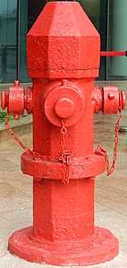 |
| Retired red Octagonal hydrant |
| outside the entrance of Fire and Ambulance Services Education Centre Cum Museum |
| Photo taken in Y2026-M05 |
 |
| Retired green Octagonal hydrant 360 |
| North Point Fire Station |
| Photo taken in Y2026-M07 |
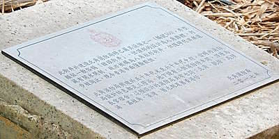 |
| A plaque next to the retired green Octagonal hydrant 360 |
| North Point Fire Station |
| Photo taken in Y2026-M04 |
 |
| Perspective-adjusted photo of the plaque next to the retired green Octagonal hydrant 360 |
| North Point Fire Station |
| Photo taken in Y2026-M04 |
The plaque next to 360 gives a brief history of 360, "Octagonal hydrants" in general, and North Point Fire Station. Here is the Chinese transcript:
這街井於建造北角消防局時已屬其設備之一(編號360)，外型類似一般稱俗稱「豬頭街井」，但頂部的設計為八角錐體，內藏有開水閘制，故亦被稱為八角柱形街井，但隨時代日漸進步被淘汰，現今香港市面僅餘數個。
北角消防局興建於五十年代末至六十年代中期，當時的消防局設計特色都是三層高，地下設有三個消防停車間，頂層為長官宿舍。這種設計的消防局共有七間: 北角、觀塘、馬頭涌、荔枝角、荃灣、舊元朗及舊香港仔。
北角消防局 二零一七年
and my rough translation:
This fire hydrant (number 360) was the equipment of North Point Fire Station since it was built. Its appearance is similar to what is colloquially known as the "Pig Head fire hydrant", but its top section is shaped like an octagonal pyramid which houses the operating valve, hence it is also called the "Octagonal prism hydrant". However, this hydrant type is being phased out as time passes, now there are only a few left in Hong Kong.
North Point Fire Station was built between the end of 1950s and mid-1960s. Fire station design of that time period was that the fire stations were three storeys tall, with three firefighting vehicle parking slot on the ground floor and the top floor was the accommodation for officers^. There are seven fire stations of this design: North Point, Kwun Tong, Ma Tau Chung, Lai Chi Kok, Tsuen Wan, Yuen Long (former), Aberdeen (former).
North Point Fire Station, 2017
For those who are slightly confused, the "Pig Head" hydrant mentioned on the plaque was talking about Round Head hydrants. I personally think "Octagonal hydrants" don't really look like Round Heads...I mean yeah they both have one front nozzle and two side nozzles, but thats about it. Also, there are more than a few "Octagonal hydrants" in Hong Kong in 2026 - at least twenty on the streets, and the number would be higher in 2017.
Octagonal hydrants with a hole on top that are in service
Six out of twenty two "Octagonal hydrants" have holes on top: 360, 450, 451, 30143, 30222, 30225. I also showed 360 above so here are the photos of the other five. 450 was the only one of the six that is entirely above ground.
| ||
| red Octagonal hydrant 450 with a hydraulic test box chained to it, but 450 is not being hydraulic tested when the photo was taken; that box was already there in 2020 but it seems 450 had never been hydraulic tested this whole time | ||
| Causeway Road at Queen's College | ||
| Photo taken in Y2026-M04 |
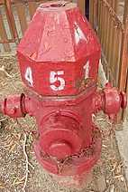 |
| red Octagonal hydrant 451 |
| Causeway Road opposite of tram stop 42W Victoria Park |
| Photo taken in Y2026-M04 |
| ||
| red Octagonal hydrant 30143 (previously 65) | ||
| Hennessy Road at Canal Road East | ||
| Photo taken in Y2026-M04 |
| ||
| red Octagonal hydrant 30222 (previously 461) | ||
| Hawthorn Road at Holly Road | ||
| Photo taken in Y2026-M04 |
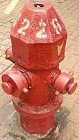 |
| red Octagonal hydrant 30225 (previously 123) |
| Village Road at Sing Woo Road |
| Photo taken in Y2026-M04 |
Octagonal hydrants without hole that are in service
Out of the fifthteen remaining "Octagonal hydrants" that I have not shown yet, a few of them stand out (based on what I know). Number 28489 is the only "Octagonal hydrant" that is entirely above ground. Number 28564 is the only one that still has a white band painted on the hydrant, which means 28564 is (or was) connected to a trunk main. Number 30089 is the only one that have all its caps painted blue, which I believe means they are currently not usable. 30089 had its caps painted blue at some point between Y2016-M12 and Y2019-M10. Number 27930's caps were temporarily painted blue at some point in mid-2026 but their caps had been painted red again by M09. Number 30142 is the only one that is inside a fire station and still in service. Number 30565 is the only one that is surrounded by tree roots.
 |
| red Octagonal hydrant 27930 (previously 114) when all its caps were temporarily painted blue |
| Yuen Ngai Street at Prince Edward Road West |
| Photo taken in Y2026-M08 |
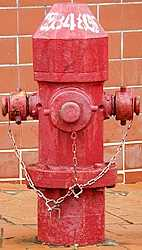 |
| red Octagonal hydrant 28485 (previously 50) |
| Kent Road at Somerset Road |
| Photo taken in Y2026-M06 |
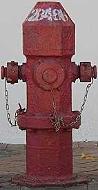 |
| red Octagonal hydrant 28486 (previously 51) |
| Somerset Road at Devon Road |
| Photo taken in Y2026-M03 |
 |
| red Octagonal hydrant 28489 (previously 48) |
| Suffolk Road near Kowloon Tong MTR station Exit A1 |
| Photo taken in Y2026-M08 |
 |
| red Octagonal hydrant 28564 (previously 837) with a white band painted on the hydrant |
| Ho Tung Road at Boundary Street |
| Photo taken in Y2026-M04 |
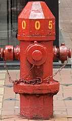 |
| red Octagonal hydrant 30053 (previously 105) |
| Electric Road at Yacht Street |
| Photo taken in Y2026-M04 |
 |
| red Octagonal hydrant 30089 (previously 134) with all caps painted blue |
| Shau Kei Wan Road at Tai Lok Street |
| Photo taken in Y2026-M07 |
 |
| red Octagonal hydrant 30142 is inside the fire station so it can be difficult to photograph |
| Wan Chai Fire Station |
| Photo taken in Y2026-M07 |
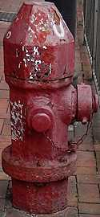 |
| red Octagonal hydrant 30174 |
| Leighton Road at Canal Road East |
| Photo taken in Y2026-M07 |
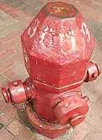 |
| red Octagonal hydrant 30193 (previously 55) |
| Tung Lo Wan Road at Causeway Road |
| Photo taken in Y2026-M04 |
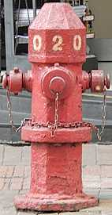 |
| red Octagonal hydrant 30205 (previously 135) |
| Sing Woo Road at Yuen Yuen Street |
| Photo taken in Y2026-M04 |
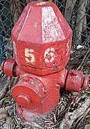 |
| red Octagonal hydrant 30565 (previously 97) is slowly being devoured by a tree |
| Eastern Street at High Street |
| Photo taken in Y2026-M03 |
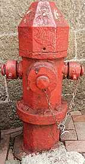 |
| red Octagonal hydrant 30747 (previously 276) |
| Wyndham Street opposite of Yu Yuet Lai Building |
| Photo taken in Y2026-M07 |
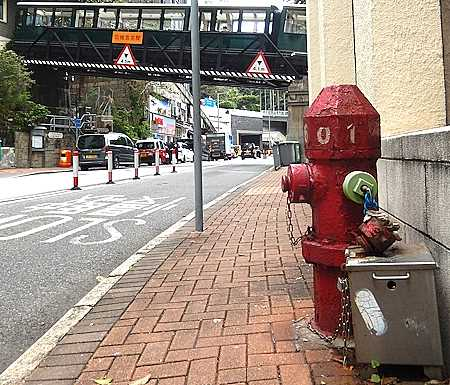 |
| red Octagonal hydrant 31601 (previously 133), with a sixth generation Peak Tram set on the rail bridge over Kennedy Road in the background |
| Kennedy Road at Zetland Hall |
| Photo taken in Y2026-M04 |
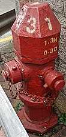 |
| red Octagonal hydrant 31631 (previously 126) |
| Queens Road East at Wan Chai Gap Road |
| Photo taken in Y2026-M04 |